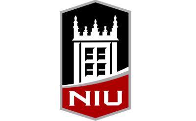
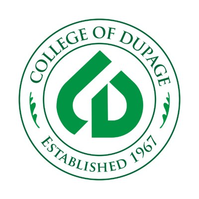

 
NIU (Northern Illinois University)
2016 - Present
Vision, Mission and Accreditation. Northern Illinois University's vision is to be an engine for innovation to advance social mobility; promote personal, professional and intellectual growth; and transform the world through research, artistry, teaching and outreach.
COD (College of DuPage)
2015-2016
The mission of College of DuPage is to be a center for excellence in teaching, learning, and cultural experiences by providing accessible, affordable, and comprehensive education.
LTHS (Lyons Township High School)
2011-2015
Lyons Township High School makes meaningful learning and dedicated teaching in a student-centered environment its highest priority. With the help of the entire LTHS community and through comprehensive curriculum and co-curricular programs, we pledge to foster the full intellectual, physical, moral, and aesthetic growth of all students and affirm our century-old motto, Vita Plena, the quest for the fulfilling life.